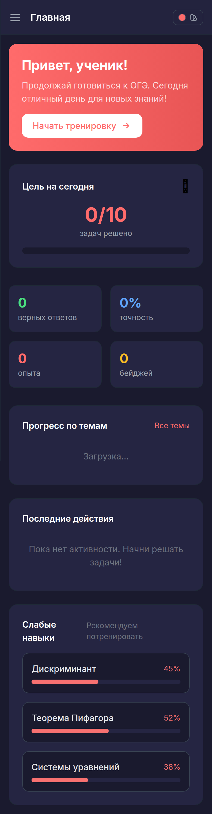
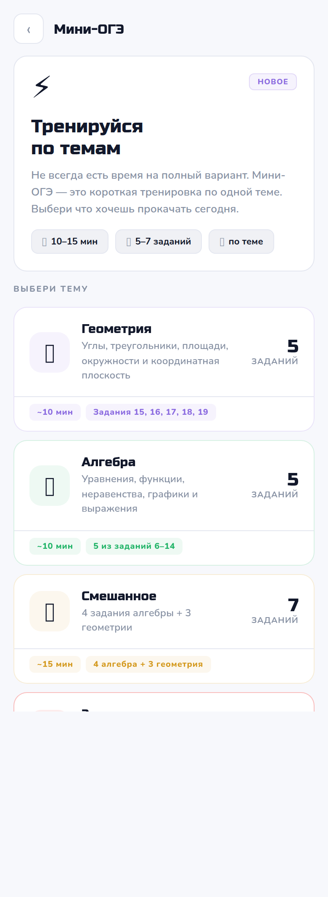
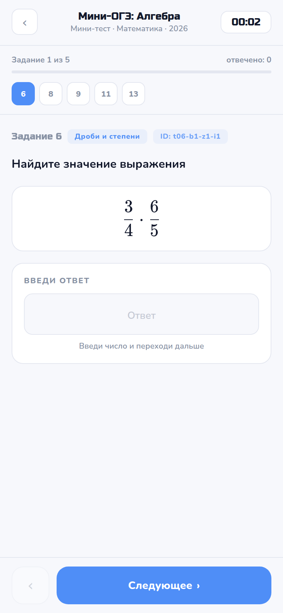
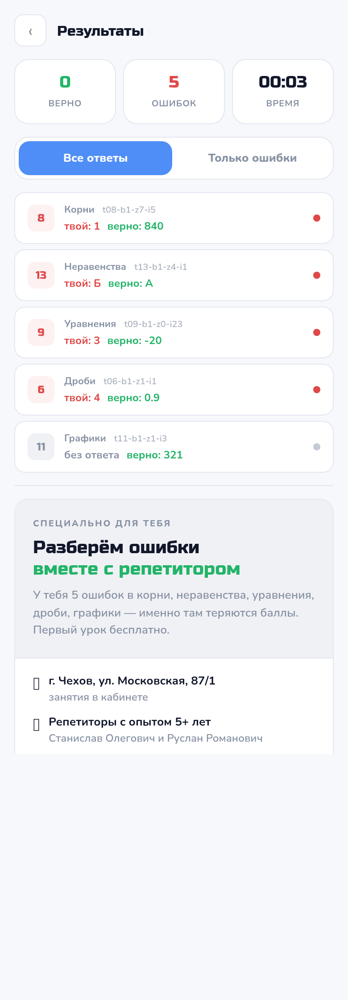
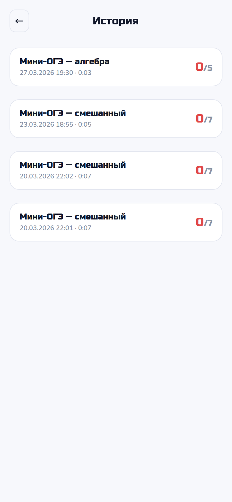
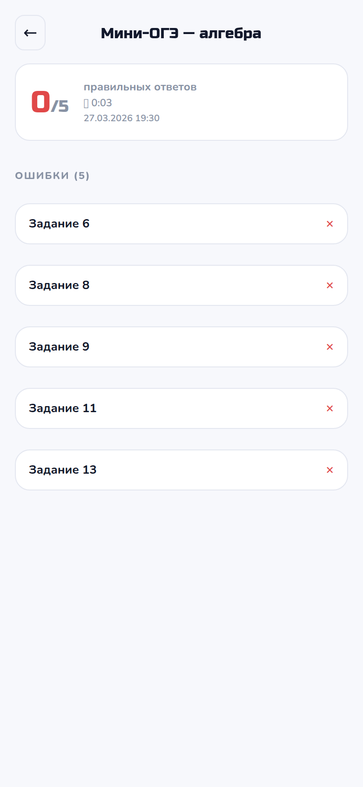

QA: Пустой ответ = ошибка
2026-03-27 19:30:29 UTC · https://palomatika.ru
Сценарий: запустить мини-ОГЭ, ответить на все задания кроме последнего,
отправить → результат должен показывать X/
5
(а не X/4).
9 steps
8 OK
1 WARN
1. Login
2. Mini Selection Page
3. Start Mini OGE (algebra)
4. Status API
5. Commit Answers (skip last)
6. Submit Attempt
7. Results Score Check
8. History List Score Check
9. History Detail Score Check
1
Login
https://palomatika.ru/dashboard
Logged in: https://palomatika.ru/dashboard

2026-03-27T19:30:19.617Z
2
Mini Selection Page
https://palomatika.ru/tg/mini
Page loaded

2026-03-27T19:30:20.700Z
3
Start Mini OGE (algebra)
https://palomatika.ru/tg/test/259
Test page: https://palomatika.ru/tg/test/259
Attempt ID: 259
API status: 200
Redirect: /tg/test/259
2026-03-27T19:30:22.018Z
4
Status API
/api/oge/attempts/259/status
tasks_total: 5
HTTP: 200
Has multiple tasks — can skip one
2026-03-27T19:30:22.616Z
5
Commit Answers (skip last)
POST .../tasks/N/commit
Answered: 4/5 (task 5 left empty)
Task 1: HTTP 200 answer="1"
Task 2: HTTP 200 answer="2"
Task 3: HTTP 200 answer="3"
Task 4: HTTP 200 answer="4"
Task 5: ⬜ INTENTIONALLY SKIPPED (empty)

2026-03-27T19:30:23.726Z
6
Submit Attempt
POST .../submit
HTTP: 200
success: true
No error
2026-03-27T19:30:24.110Z
7
Results Score Check
https://palomatika.ru/tg/results/259
Scores found: 87/1
WARN: total=1, tasks_total=5, answered=4 — unexpected value
Skipped/unanswered indicator present

2026-03-27T19:30:26.549Z
8
History List Score Check
https://palomatika.ru/tg/history
Scores in history: 0/5, 0/7, 0/7, 0/7
OK: history total=5 = tasks_total=5 ✓

2026-03-27T19:30:27.913Z
9
History Detail Score Check
https://palomatika.ru/tg/history/259
Score: 0/5
OK: total=5 = tasks_total=5 ✓

2026-03-27T19:30:29.312Z